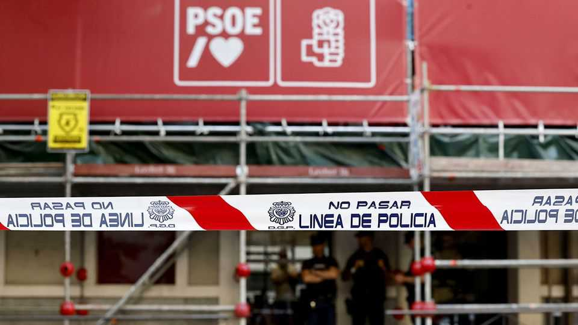

How long can Pedro Sánchez last?
The Socialists’ mounting scandals threaten to bring down Spain’s prime minister
June 4th 2026

Eight years ago this week Pedro Sánchez became Spain’s prime minister after he organised and won a parliamentary censure motion against Mariano Rajoy, the conservative incumbent. The prompt was the conviction for corruption of former officials in Mr Rajoy’s centre-right People’s Party (PP). Now Spanish politics has come almost full circle. Having promised to regenerate Spanish democracy, Mr Sánchez finds himself weakened by scandals involving leading figures in his own Socialist Party. He faces calls for a general election that polls suggest the right would win. But he insists that his left-of-centre government will carry on until the end of the current parliament’s term in July 2027 “and beyond”.
Two of Mr Sánchez’s closest aides in the party, José Luis Ábalos and Santos Cerdán, were indicted in 2024 and 2025 respectively for rigging public contracts. The prime minister claimed betrayal, apologised and vowed to carry on. But if anything, the latest blows are even more severe. Last month a high-court judge named José Luis Rodríguez Zapatero, a former Socialist prime minister praised by some as the guardian of the party’s current values, as the suspected leader of an influence-peddling racket.
The judicial probe centres on Mr Zapatero’s controversial ties to the dictatorship in Venezuela, and in particular on a €53m ($62m) bail-out by Mr Sánchez’s government of Plus Ultra, a Venezuelan-Spanish airline, during the pandemic. The judge claims that payments of around €2m to Mr Zapatero and his daughters for consultancy work were mainly a commission for arranging the rescue. Mr Zapatero, like the other Socialists targeted in judicial investigations, denies wrongdoing. Mr Sánchez has never clearly explained why Plus Ultra, which had only four planes, received a bail-out designed for Spanish companies of strategic economic importance.
Days later another high-court judge ordered police to search the Socialist Party’s headquarters in Madrid. This was part of his investigation into an alleged plot by Mr Cerdán and others to smear or bribe police and prosecutors involved in other probes.
Mr Sánchez has admitted that the party has made mistakes. But several of his aides claim that the investigations are a co-ordinated attempt to bring down the government by unfair means. They complain of persecution and a double standard in which cases against the Socialists proceed more quickly than those involving the PP. They have half a point. Mr Sánchez’s brother and his wife face criminal charges in lower courts over conduct that looks merely unethical, not illegal: accepting an apparent sinecure in a regional government and raising funds for a university chair respectively. In contrast, a case involving alleged abuse of power by a former interior minister in Mr Rajoy’s government in 2013 has only now come to trial.
But both of the high-court judges leading the latest probes have unimpeachable reputations. The investigation into Mr Zapatero began with French and Swiss prosecutors. And the claims of persecution have diminishing returns. An unpublished poll suggests that only around half of Socialist voters believe them, notes Ignacio Urquizu, a sociologist and former Socialist MP.
The latest scandals have prompted two of the government’s parliamentary allies, the Basque and Catalan nationalist parties, to call for an early general election. But they are not willing to bring this about by supporting a censure motion, since that would mean voting with Vox, a hard-right party. In private many Socialist mayors and regional officials say that Mr Sánchez’s plan to ride out his term through July 2027 will undermine their chances in local elections, which are due next May. But few dare say so in public.
Contrary to appearances, Spain is not a particularly corrupt country. Graft is largely restricted to public contracting and party financing. Still, despite his promises, Mr Sánchez has done little to stop this. The cost of the political stalemate is mounting public cynicism towards Spanish democracy and its institutions. The sooner the country holds an election, the better. ■
To stay on top of the biggest European stories, sign up to Café Europa, our weekly subscriber-only newsletter.